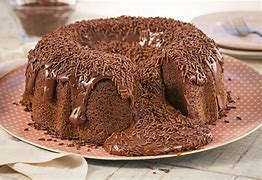

Bolo de chocolate

Ingredientes
Massa
- 2 xícaras de farinha de trigo
- 1 xícara de açúcar
- 1 xícara de chocolate em pó
- 1 colher de sopa de fermento em pó
- 1 pitada de sal
- 3 ovos
- 1 xícara de leite
- 1/2 xícara de óleo
Cobertura
- 4 colheres de sopa de açúcar
- 4 colheres de sopa de chocolate em pó
- 2 colheres de sopa de manteiga
- 5 colheres de sopa de leite
Passo a passo
Massa
- Preaqueça o forno a 180°C.
- Em uma tigela, misture os ingredientes secos: farinha, açúcar, chocolate em pó, fermento e sal.
- Adicione os ovos, o leite e o óleo. Misture bem até obter uma massa homogênea.
- Despeje a massa em uma forma untada e enfarinhada.
- Leve ao forno por cerca de 35 a 40 minutos, ou até que um palito saia limpo.
- Retire do forno e deixe esfriar antes de colocar a cobertura.
Cobertura
- Em uma panela, misture o açúcar, o chocolate em pó, a manteiga e o leite.
- Leve ao fogo médio, mexendo sempre até começar a ferver.
- Cozinhe por 2 a 3 minutos, até engrossar levemente.
- Despeje sobre o bolo ainda morno.